ch3: 순수한 유체의 부피 특성
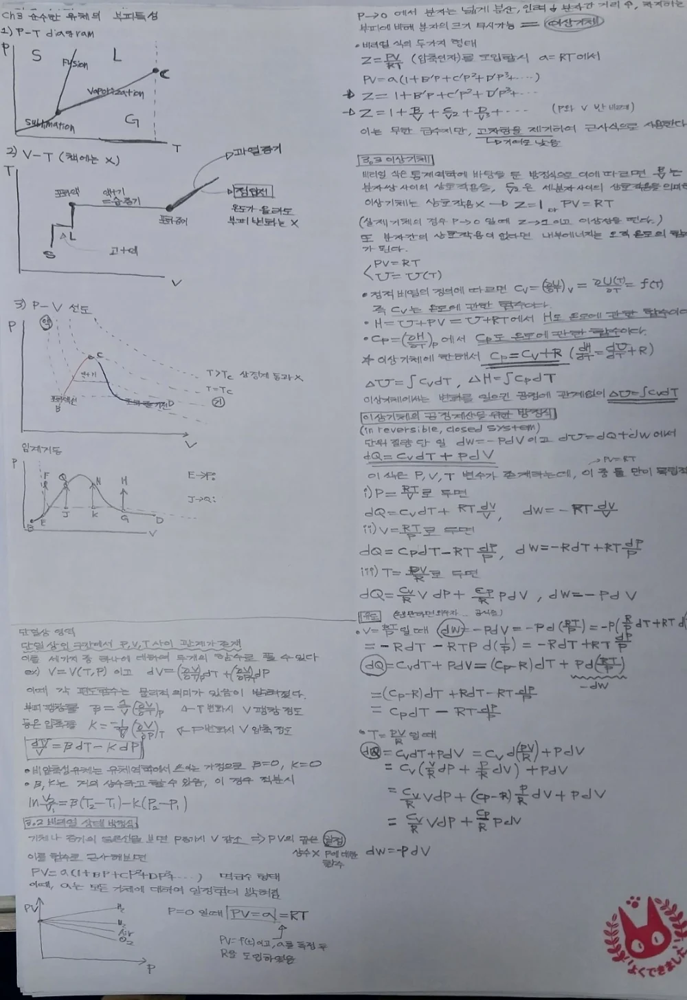
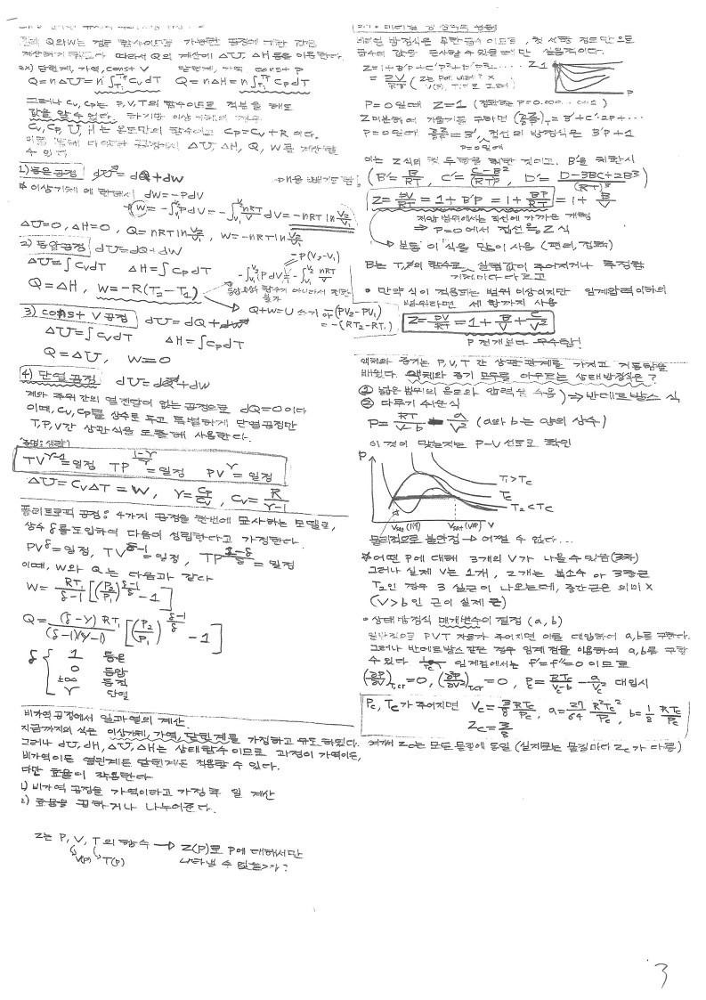
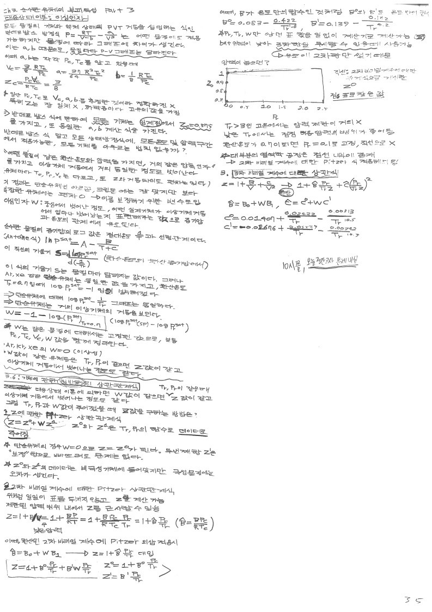
1. 각 물질들은 온도,압력에 따라 부피가 달라지며 이 세 변수는 밀접한 관계를 가진다. 이는 물질의 P-V 선도, P-T선도 등을 통해서도 서로 연관성이 있음을 알 수 있다.
2. 이 관계를 기술하기 위한 여러가지 식이 나와있으며 대상물질이 가스인지 액체인지에 따라 다음과 같이 분류된다.
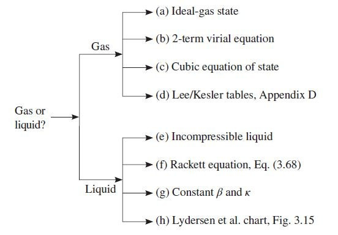
중요한 것은 다음과 같다. 이것에 대해 각각 알아보도록 하겠다.
기체: (a)이상기체 방정식/ (b)비리얼 식/ (c)3차 방정식/ (d)리-케슬러 테이블
액체: (g) 등온압축률과 부피팽창률
기체
(a)이상기체 방정식: 이상기체 상태의 기체가 각 과정을 거칠 때, Q W U H를 구하는 문제가 주로 출제된다.
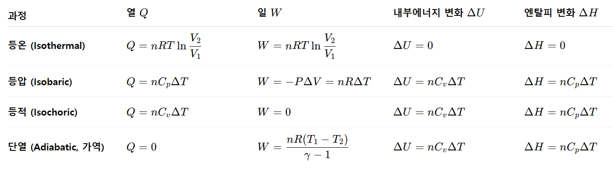
단열일때, 다음 식이 성립한다.
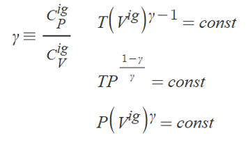
(b)비리얼 식
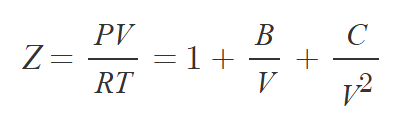
Z값을 위와 같이 정의하여 다음처럼 V값을 구할 수 있다.
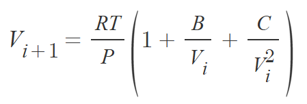
여기서 iteration을 어떻게 하냐면, 우선 i=1 일 때 부피를 이상 기체 상태의 부피로 시작해서 V2를 구한다. 그리고 이 V2를 다시 우변에 대입해서 V3을 구하고... 이 과정을 V가 어느 값에 수렴할 때 까지 반복한다. 발산한다면 뭔가 잘못된 것이고, 진동한다면 평균값을 답으로 낸다. 이것이 비리얼식으로 구한 최종부피이고, 이를 통해 Z값 (실제 V/ 이상V 비율) 또한 구할 수 있다.
예시) 이상기체로 구한 Va로 실제 부피 Vc를 구하기.
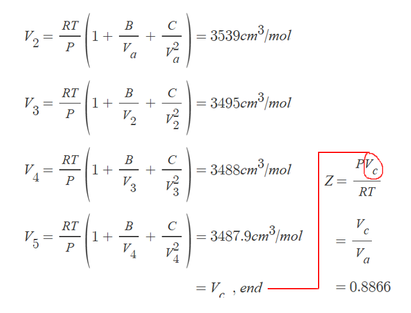
(c)3차 방정식
상태방정식은 기체뿐만 아니라, 액체 상태까지도 PVT 거동을 표현해줄 수 있다. 비리얼 식은 고압이나 액체에 가까운 상태에서는 정확하지 않다는 단점이 있다. 이로 인해 산업에서는 상태방정식으로 PVT거동을 주로 묘사한다. 상태방정식 또한 보정을 위한 상수가 필요하다. RK가 유명하다.
(d)대응 상태와 이심인자
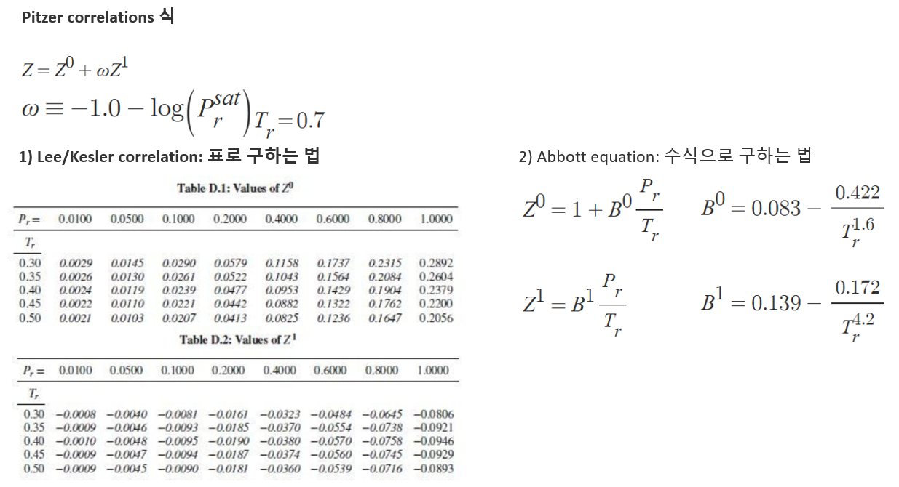
대응상태 이론으로 Z를 구해버린 다음, 이걸로 주어진 P-T에서 V를 구할 수도 있다.
액체
(g) 등온압축률과 부피팽창률: B와 k는 변수이지만, 상수로 근사할 수 있으며 이때 P-T변화에 따른 액체의 부피 변화는 다음으로 나타낼 수 있다.
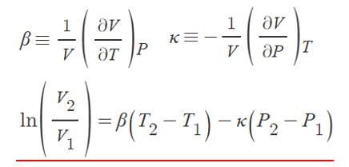